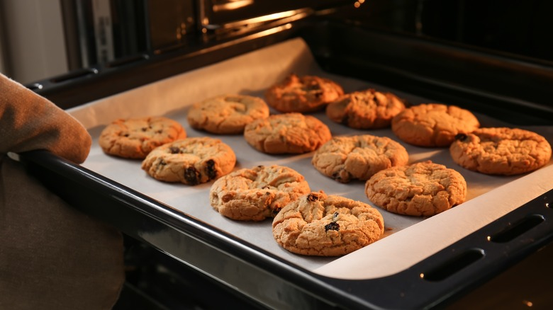
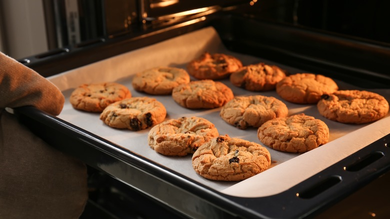

1. Leave butter on the counter until your finger leaves an imprint. Once softened (not melted), beat the butter and sugars into a light, fluffy mixture.
2. Then, beat in the egg and vanilla until completely blended.
3. Stir in flour, baking soda, and salt until they just disappear into the dough.
4. Add the chocolate chips (and optional nuts) last to prevent over mixing, which can lead to tough cookies.
5. Bake one cookie sheet at a time. Check cookies after 8 minutes to see if they are golden brown around the edges.
6. Cool cookies on the cookie sheet for two minutes, then move them to a cooling rack. This allows them to set up a bit before removing, resulting in perfect chewy centers and crispy edges.
 
